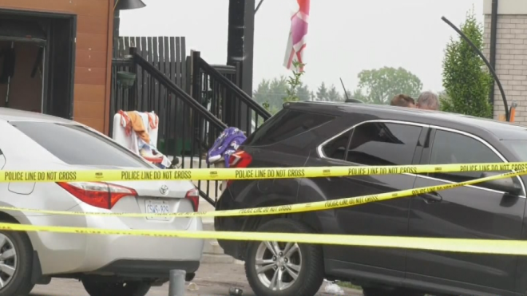
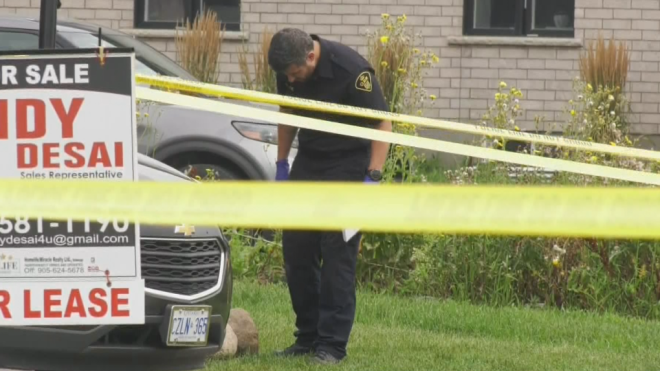
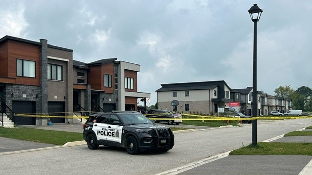

安省Strateford镇周四晚上发生一宗恶性枪击事件，导致多人中枪死亡，令人震惊的新细节刚刚公布。

Stratford警局确认枪手为31岁的Ricky Bilcke，并罕见地公开了所有受害者的姓名。
警方称，Bilcke使用一支高功率步枪首先从街对面射杀了36岁的Jonathan Bennett。随后，Bilcke拿了一把猎枪，从路上开枪射击43岁的David Tokley。第三人Stephanie Irvine在离开家时被枪击。
警方表示，Bilcke还向附近的住宅开了几枪，然后朝自己开枪自杀。他在现场死亡。
第一名受害人Bennett被送往当地医院后被宣布死亡。
另两名中伤的Tokley和Irvine被空中救护机送至安省伦敦的维多利亚医院。
Tokley的伤势危及生命，而Irvine的伤势则将改变生活。
枪击发生时还有儿童在场，但警方仍在调查他们是否直接卷入其中。

邻居们的描述
警方表示，他们在当晚10点45分左右接到多起关于枪击事件的911报警电话，地点位于Bradshaw Drive，靠近McCarthy Road。
“我被敲击声吵醒了，有小的声音，然后是像爆炸一样的声音，”邻居D’Arcy-Ann Larin说。“之后还有更小的爆裂声。”
“我想我们听到了五六声枪响，”邻居Kiranpreet Kaur解释道。“有很多尖叫声。两三分钟内有六到八辆警车赶到。我们看到一位女士手臂流血。”
“我看到邻居们在躲避，”Jangshant Singh说。“我告诉我的家人去房子的后房间，我自己也去了。”
枪击调查
邻居之间的矛盾是警方熟知的。
“我们接到了有关涉事双方之间持续邻居纠纷的报告，”警官Darren Fischer确认。“在过去几个月里，我们曾多次介入。”
与此同时，任何拥有该事件视频监控的人都被要求将其在线提交给警方。
“我们知道有许多事件视频已被发布到社交媒体上，”警方在一份媒体声明中表示。“出于对事件受害者的尊重，我们要求这些视频被删除。”

邻居们的担忧
所有邻居都描述Bradshaw Drive及其周边地区为一个安静的社区。
“这些都是新建的房子，”Singh说。
“我们都非常震惊，”Kaur解释道，她表示担心让女儿出去玩。“我现在有点害怕上街和她一起玩。”
Larin也感到不安。“我感到非常焦虑，有点神经紧张，”她承认道。